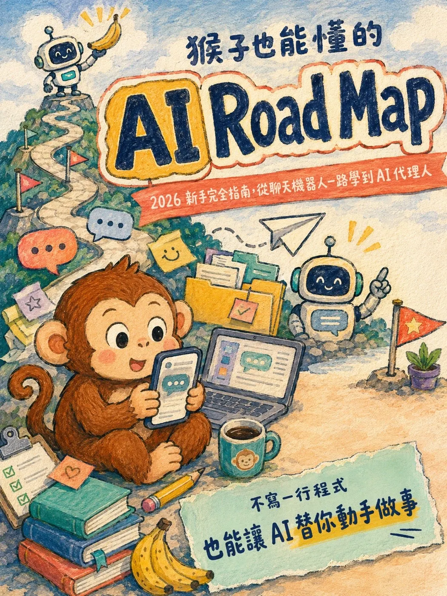

目錄
這本書怎麼走
共 12 個章節。點任一章直接跳過去，讀到哪裡都會自動記住。
序章1 / 12
倒下四年，剛好趕上
你好，我是冏冏 Yue Yu，舊名冏星人，是活網多年的創作者老屁股（一定是吧）。
2018 年，我生了一場病。不是那種休息兩週就會好的病，它一拖，就是四年。
那四年裡，我推掉了大部分的工作。體力只夠維持基本的生活，事業幾乎停擺，眼睜睜看著同行一個一個超車。說不焦慮是騙人的，在憂鬱的谷底我曾經以為我的病永遠不會好了，這輩子就是半個廢人，讀書記不住、容易情緒化，每天吃一堆副作用是頭痛噁心的藥，撐著勉強過日子。
身體終於好轉的時候，我體力還沒完全回來，創業多年的資產被消耗殆盡。可是事業要重建，每一步都要花錢花力氣。照以前的做法，隨便試一個方向，外包、請人、買廣告，都是一筆開銷。錯一次，就要縮衣節食好幾個月才敢再試。
可是剛好，我倒下的這幾年，世界變了。
AI 技術有突破性的發展。突然之間以前那些花最多時間的重複無聊流程、乃至需要耗費一點點創意的工作，都能讓機器人完成。
以前要請設計師畫的圖，現在生成一張不用一分鐘；以前要外包工程師的網頁，現在交代 AI 一句話；以前想驗證一個產品方向，要先燒錢做出來才知道行不行，現在一個下午就能做出雛形直接丟到市場上看反應。
我用 AI 把一個人的產能撐成一個小團隊。就這樣，在沒有多少資金的狀況下，用比生病前快得多的速度，我重建自己的事業，在短短 3 年之內，資產重新站上 8 位數。
回頭看，我常想：如果沒有趕上 AI，我大概還在谷底慢慢爬。
所以這本書對我來說，從來就不只是「教你用工具」。我想交給你的，是那套讓一個沒錢也沒體力的病後之人，都能重新站起來的系統。你手上的資源可能也不多，時間可能也很碎，沒關係。
這條路我親自走過一遍，現在再帶你走。你不一定能走到跟我一樣的終點，但是起碼你開始了。
感謝願意開啟這本書的你。你不知道自己能走得多高、多遠。
前言2 / 12
這本書怎麼讀
0.1 2026 年才開始學 AI，一點都不晚
很多人擔心現在才學 AI 已經太遲。其實多半是相反。
工具越成熟，入門越簡單。2023 年要自己摸索的功能，現在打開就能用；當年要寫一長串咒語才能得到的結果，現在用日常語言交代清楚就行。早進場的人踩過的坑，大部分已經被填平了。
你唯一需要的，是一條正確的路線。這本書就是那條路線。
0.2 路線圖總覽：四個階段
這本書把 AI 學習拆成四層樓，一層一層爬：
會聊天：認識工具，開始對話（第一、二章）
聊得好：用進階功能拿到更好的結果（第三章）
讓 AI 進入你的工作：記憶、專案與工作流（第四章）
讓 AI 自己動手做：Agent 與 Skills（第五、六章）
每一層都以前一層為地基。你可以跳著翻，但第一次讀，建議照順序。
最後的第七章是加送的裝備庫：自媒體經營用得上的免費與便宜工具，整理成一張地圖，隨時翻查。
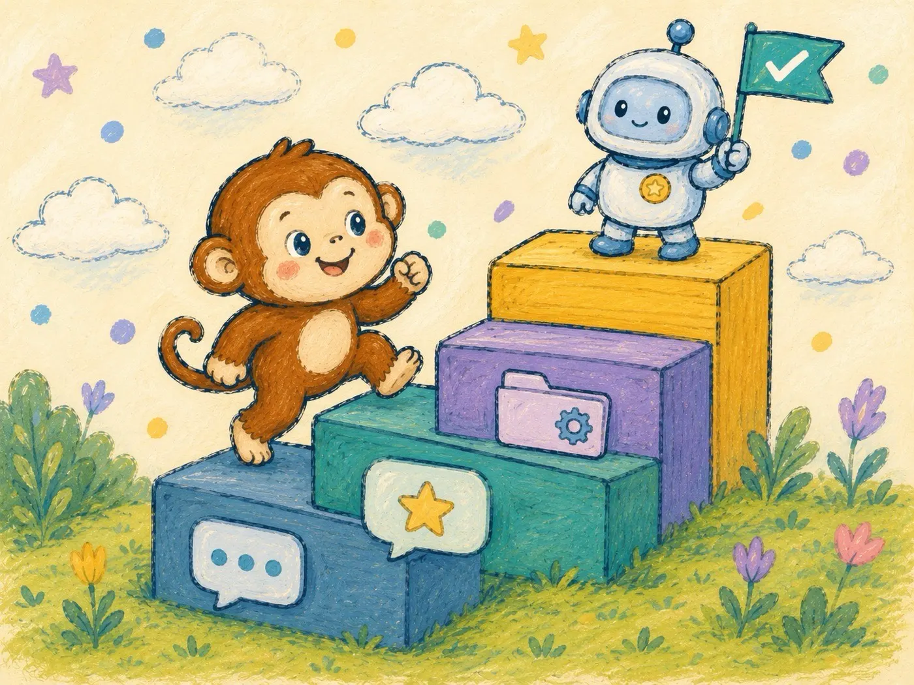
0.3 為什麼不談 Vibe Coding
你可能會發現，這本書沒有把 Vibe Coding 放進主線。
「還以為學完馬上可以自己做 App，結果沒有啊？」
Vibe Coding 屬於進階的學習，市面上的課程也很多了，有相對完整的體系。其實整個 AI 領域都變動很快，這本書只篩選這幾年已經成為主流、適合新手馬上理解和實作的工具。
0.4 本書使用方式
每章結尾有一個「10 分鐘實作」。做完再往下讀。
原因很簡單：AI 是動手的技能，不是閱讀的知識。只讀不做，一週後大概什麼都不剩；每章動手 10 分鐘，讀完這本書你就已經是身邊朋友裡最會用 AI 的人。
0.5 新手最常犯的兩個錯
第一個錯：工具收集癖。每個新工具都註冊、每個都載，結果每個都只開過一次。工具不是重點，用熟一個，比淺嚐十個有用得多。
第二個錯：只會問，不會用。把 AI 當搜尋引擎，丟一個關鍵字，看一眼答案就關掉。這樣用，AI 對你的價值不到一成。
這兩個錯，後面的章節會各自給出解法。
第一章3 / 12
認識主流 AI 聊天機器人（2026 年版）
1.1 30 秒懂 AI 聊天機器人怎麼運作
你可以把 AI 聊天機器人想成一位讀過全世界文字的接話高手。
它背後的核心技術叫 LLM，也就是「大型語言模型」。LLM 不是像人一樣真的理解世界，而是從大量文字裡學會「什麼字後面最可能接什麼字」。例如它看過很多「今天天氣很」後面接「好」「熱」「冷」，就會依照前後文判斷下一個最合理的字詞。
一篇文章就是這樣一小段、一小段接出來的。它先根據你的問題接出第一個合理的詞，再根據前面已經生成的內容繼續往下接。因為它讀過的語料多到難以想像，幾乎什麼都能聊、什麼都能寫。
但接話高手有兩個天生的毛病。
第一，它偶爾會講錯，而且錯得一本正經。這叫「幻覺」，重要的事實請不要盲信，務必做查核。
第二，如果你不給前文的框架，它不知道你是誰、不知道你的處境。因此，你給的背景越多，它接的話越準。
記住這兩點就夠了。
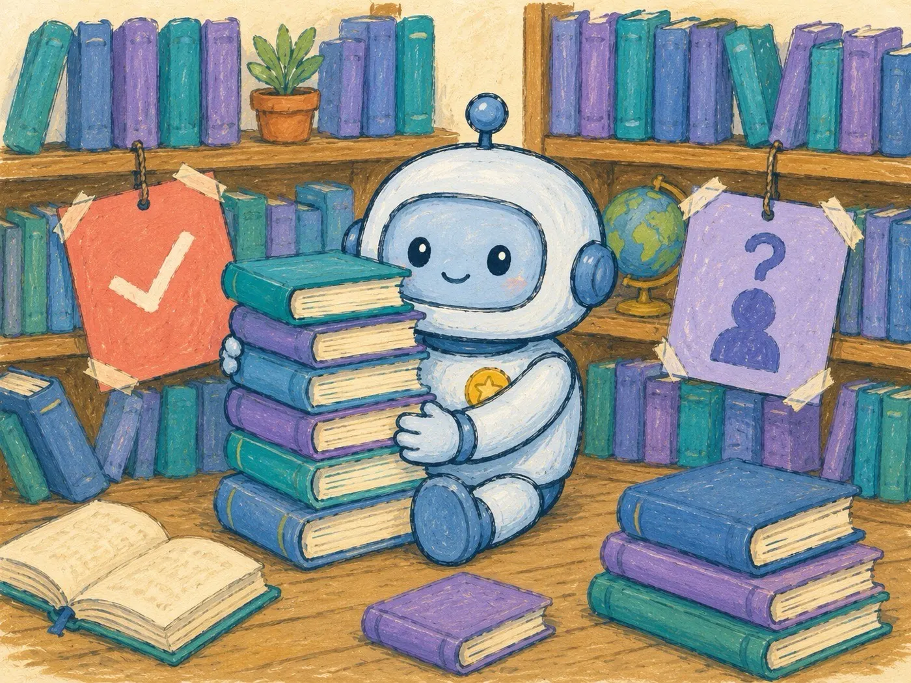
1.2 ChatGPT：最全能的入門首選
OpenAI 的 ChatGPT（https://chatgpt.com）是目前使用人數最多的 AI。2026 年 8 月為止，主線模型是 GPT-5.6 系列。
GPT-5.6 分成三個常見版本：Sol、Terra、Luna。
Sol 是旗艦模型，適合複雜推理、寫程式、規劃與重要決策。
Terra 是能力和成本的平衡版，適合日常工作、內容製作、資料整理。
Luna 是便宜快速版，適合大量、重複、低風險的任務。
ChatGPT 的強項是全能：語音對話自然、圖片生成完整、工具生態豐富，遇到問題網路上的教學也最多。如果你完全不知道從哪裡開始，就從 ChatGPT 開始吧。
1.3 Claude：長文寫作與思考的首選
Anthropic 的 Claude（https://claude.ai）目前主線是 Claude 5 系列。它的特色是長文、推理、寫作、程式與人味比較好的對話。
Claude 現在常見的層級是 Fable、Opus、Sonnet、Haiku。
Fable 是最高能力的模型，適合長時間代理任務與高難度工作。
Opus 適合複雜企業任務、深度推理與 agentic coding。
Sonnet 是速度、價格與能力最平衡的主力。
Haiku 最快，適合摘要、分類、客服、批次處理這類大量任務。
如果你的工作以文字為主，寫文案、寫報告、改稿，Claude 大概會是你用過之後回不去的那一個。它的 Projects、Artifacts 與 Claude Code，對文字工作者和想做 Vibe Coding 的人特別有感。
1.4 Gemini：Google 全家桶使用者的預設解
Google 的 Gemini（https://gemini.google.com）最大優勢不只在模型本身，而是在 Google 生態系整合。
Gemini 目前常見版本包括 Flash-Lite、Flash、Pro。
Flash-Lite 是最快、最便宜的版本，適合大量處理、摘要、分類、簡單改寫。
Flash 是速度和能力的平衡版，適合日常問答、多模態任務、低延遲使用。
Pro 是高階模型，適合複雜推理、長上下文、程式與 Vibe Coding。
如果你的信箱是 Gmail、行事曆是 Google 日曆、文件都在 Google Docs，Gemini 可以直接讀寫這些服務，省掉大量複製貼上。反過來說，如果你不住在 Google 生態系裡，這個優勢對你就不存在。
1.5 其他選手快速認識
Grok（https://grok.com）：xAI 的產品，與 X（前 Twitter）深度整合，強項是即時話題與社群輿論，想知道「現在網路上在吵什麼」時特別好用。
Manus（https://manus.im）：通用型 AI Agent 的代表。它跟聊天機器人的差別在於，你交辦的不是一個問題，是一整件事。給它「幫我做一份競品調查簡報」，它會自己上網查、自己整理、自己產出檔案。這類工具是第五章的主題，這裡先混個臉熟。
1.6 怎麼選主力工具：三個問題
不用全部都訂閱。問自己三個問題：
你的工作以什麼為主？文字為主選 Claude，圖像與多媒體需求多選 ChatGPT。
你活在哪個生態系？重度 Google 使用者，Gemini 的整合價值最高。
你願意付費嗎？願意的話，選一家訂就好。答案不確定的話，先都用免費版，一兩週後看你最常打開哪一個，身體比腦袋誠實。
怎樣才算 Google 重度使用者
人人都有 Google 帳號，所以第二題最容易卡住。給你三個判斷點：
每天用 Gmail 收信回信
檔案幾乎都丟在 Google Drive
行程只記在 Google 日曆。
三個都符合，訂 Google AI Pro 就很划算，因為 Gemini 就內建在這些服務裡面，資料不用搬來搬去。
不過 Gemini 寫出來的文章、回答問題的細膩度，在三家裡面的口碑是最弱的。它厲害的地方在整合跟影像，文筆方面就需要其他家來補強。
三家現在的強弱（2026 年年中的狀況，這件事變得很快，訂閱前自己再查一次）
中文寫作：Claude 的高階模型公認最強，再搭配第六章要教的 Skills，差距會更明顯
寫程式：Claude Code 是這波 vibe coding 的開路先鋒，規劃能力成熟，跟 ChatGPT 陣營的 Codex 各有勝場
設計與生圖：單看生圖品質，Gemini 稍微領先；但整套設計流程還是 ChatGPT 最完整，改圖、延續同一種風格都比較順。Claude 幾乎沒有做這一塊
複雜推理：ChatGPT 的 GPT-5.6 Sol、Claude Fable 或 Opus、Gemini Pro 都是高階選項
如果只能訂一家，對照你的狀況挑：
工作就是設計、做圖：選 ChatGPT
想要一個什麼都能做的萬用助手，寫作、問問題、寫程式、生圖都要：選 ChatGPT
主力是社群寫作（寫給一般人看，對文字風格有要求），偶爾自己手搓：選 Claude
每天要啃長報告、長合約，靠文件吃飯：選 Claude
需要基本的做圖能力，本身又是 Google 重度使用者：選 Gemini
影片素材需求大：選 Gemini，影片生成目前是三家裡最完整的
主要拿來練外語口說、跟 AI 講話：選 ChatGPT
專攻 Vibe Coding：選擇 ChatGPT 或 Claude 訂閱版的 CLI 工具（後面會講）
只想追即時話題跟輿論風向：三巨頭都不是首選，回頭看 1.5 節的 Grok，免費版就夠用
1.7 免費版夠用嗎
夠用來學完這本書的前四章。
各家的免費版都能用到主力模型，差別在次數限制與尖峰時段的降速。判斷要不要付費的標準只有一個：你是不是每天都會打開它。每天都開，訂閱費多半兩三天就賺回來；一週開不到三次，先不用訂。
⏱ 10 分鐘實作
把同一個問題丟給 ChatGPT、Claude、Gemini 三家的免費版。題目用你工作上真實遇到的問題，不要用「寫一首詩」這種測不出差異的題目。
比較三個答案，選出你最喜歡的那家，當作接下來讀這本書的主力工具。
第二章4 / 12
把話說清楚，提示詞基礎
2.1 心態先修正：AI 不是搜尋引擎
搜尋引擎的用法是丟關鍵字：「台北 咖啡廳 推薦」。
AI 的用法是交代事情，像交代給一位能幹的助理：「我週六下午要跟客戶在台北東區談案子，幫我找三間安靜、有插座、適合談事情的咖啡廳。」
兩種問法丟給 AI，得到的答案天差地遠。你會發現這本書反覆出現同一件事：AI 的表現，多半取決於你交代得清不清楚。
2.2 好問題三要素：脈絡、角色、輸出格式
脈絡：你是誰、你在做什麼、你為什麼需要這個。
✗ 改寫前
「幫我寫自我介紹。」
✓ 改寫後
「我是接案設計師，主要做品牌視覺，明天要在一場 50 人的行銷聚會上自我介紹，時間 1 分鐘，幫我寫講稿。」
角色：指定 AI 用什麼身分回答。
✗ 改寫前
「這份合約有問題嗎？」
✓ 改寫後
「你是一位替接案者看合約的法務顧問，幫我檢查這份合約裡對乙方不利的條款。」
輸出格式：說清楚你要的長相。
✗ 改寫前
「幫我分析這三個方案。」
✓ 改寫後
「用表格比較這三個方案的成本、風險、上手難度，最後給我一句話的建議。」
三要素不用每次都齊全。但答案不理想的時候，回頭檢查，缺的多半是其中一項。
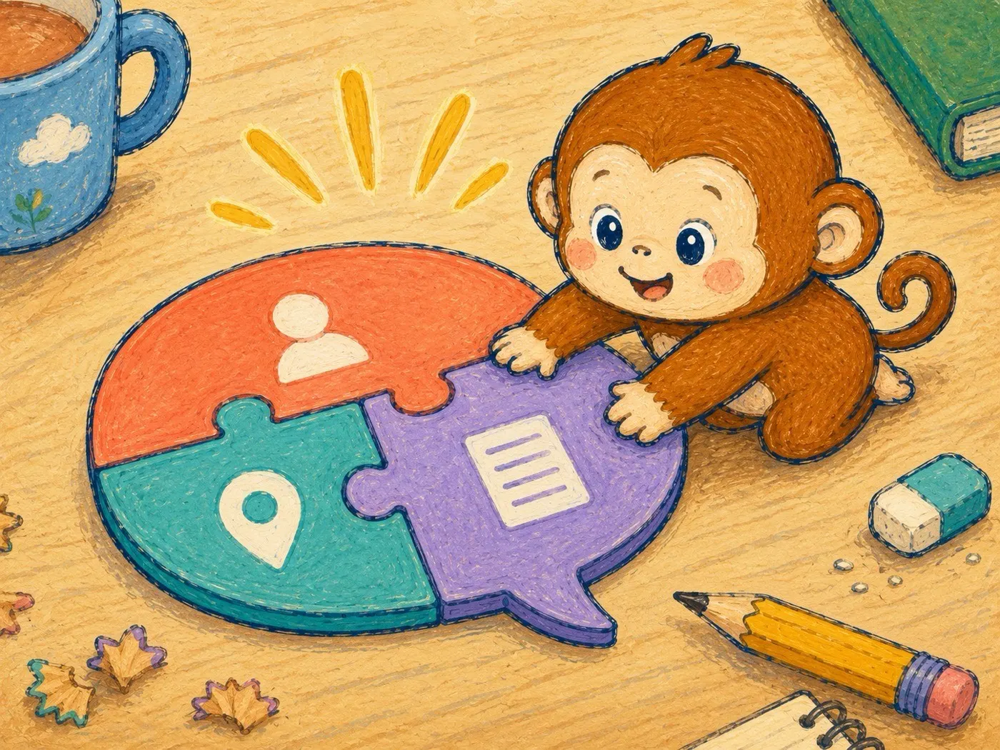
2.3 一次到位不如來回修
新手常見的挫折是：問一次，答案不滿意，關掉，下結論說 AI 不好用。
老手的用法是把第一個答案當草稿，接著修：
追問：「第二點展開多講一些。」
指出問題：「太正式了，改成朋友之間說話的語氣。」
換角度：「換一個完全不同的切入點再寫一版。」
同一個對話串裡來回三次，品質通常比第一版好非常多。AI 不怕你嫌，嫌得越具體，改得越準。
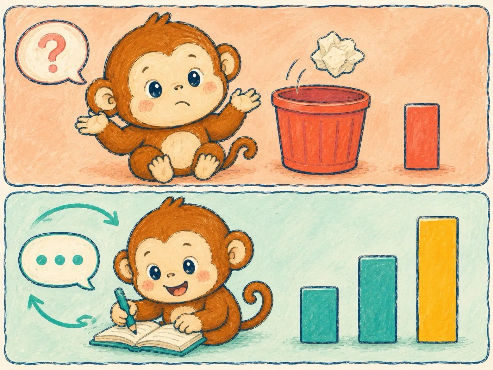
2.4 給範例是最強的提示詞技巧
想要什麼風格，與其形容一百句，不如貼一段範文。
「幫我寫一篇類似這樣的開頭：（貼上你喜歡的範例）」，這一招的效果多半勝過所有形容詞。要 AI 模仿你自己的文字風格也一樣，貼三段你過去寫的東西，比描述「我的風格是溫暖中帶點理性」有用得多。
2.5 新手常見的五個提示詞地雷
問題太大太空泛。「怎麼創業？」這種問題只會得到教科書式的空話。切小：「我想做手工甜點外送，第一個月該驗證什麼？」
一句話塞十個要求。AI 會漏掉其中幾個。拆成幾輪對話，一輪處理一兩件事。
不給背景資訊。回去看 2.2 的脈絡。
把回答當事實，不驗證。數字、日期、引用來源，重要的都要自己查一次。
每次都開新對話。同一件事留在同一個對話串裡，AI 才記得前面的討論。換話題再開新的。
2.6 建立你的提示詞筆記
從今天開始，把效果好的問法存進一個筆記，格式隨意，存了就好。
這個筆記短期的用途是重複使用，不必每次重想。長期的用途更重要：到第六章，你會把這份筆記升級成一個可以隨時召喚的 Skill。現在先累積素材。
⏱ 10 分鐘實作
拿一個你最近問過、但答案不滿意的問題，用三要素連續改寫三次，每次只補一個要素。觀察答案品質的變化，你會親眼看到「問法」值多少錢。
第三章5 / 12
聊天機器人的進階功能
3.1 上傳檔案：讓 AI 讀你的資料
對話框旁邊那個迴紋針圖示，是新手最常忽略的功能。
PDF、Word、Excel、圖片，都可以直接丟進去。常見用法：
30 頁的報告，丟進去要摘要與重點
兩個版本的合約，丟進去要它比對差異
看不懂的帳單或報表，丟進去請它解釋
一個提醒：機密文件先想清楚再上傳，這件事第四章會專門講。
3.2 看圖與生圖
AI 看得懂圖。拍一張照片問「這是什麼」、丟一張圖表問「這在說什麼」、丟一張手寫筆記請它打成文字，都可以。
AI 也畫得出圖。簡報配圖、社群貼文的示意圖、活動海報的草稿，用文字描述就能生成。訣竅跟第二章一樣：描述得越具體，結果越接近你要的。
生圖的 prompt 不用自己辛苦地寫。喜歡什麼風格，先用一句話說出來就好：紅白機遊戲的像素風、色調像 90 年代的日本動畫、賽博朋克、半寫實風格，都是 AI 聽得懂的關鍵字。
如果連描述都不會，還有更省力的做法，四步：
丟一張你喜歡的範例圖給 AI，請它分析這張圖的風格與排版
補上你的客製化要求：畫什麼主題、放什麼元素、要留哪些空間
請它把以上整理成一份完整的生圖 prompt
照著這份 prompt 生圖
換句話說，你不用當會寫 prompt 的人，你只要當看得出「像不像、對不對」的人。品味是你的工作，描述交給 AI。
3.3 語音對話：通勤時的 AI 家教
戴上耳機，AI 就是一位隨時待命的對話對象。適合的場景：
練外語口說，講錯了它會糾正你
開車或通勤時腦力激盪，想法用說的丟出來
口述筆記，講完請它整理成文字
打字是用 AI，說話也是用 AI。很多人的使用量在發現語音功能之後翻倍。
3.4 網路搜尋：補上 AI 的知識時差
AI 的知識有截止日期，太新的事情它不知道。開啟網路搜尋功能，它會先上網查再回答，並附上來源連結。
什麼時候該開搜尋：問價格、問新聞、問任何「現在」的資訊。
一個習慣：點開它附的來源看一眼。AI 偶爾會讀錯網頁的意思，來源才是最終依據。
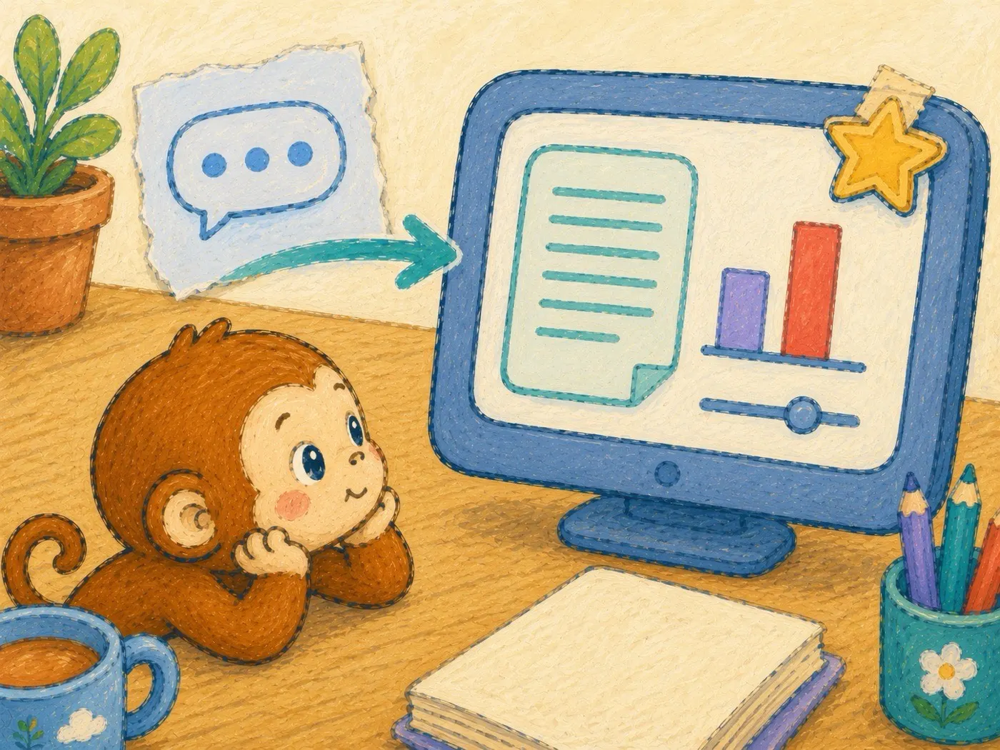
⏱ 10 分鐘實作
戴上耳機，打開語音對話，花三分鐘把你這週最卡的一件事講出來。不用先組織，想到哪講到哪，講亂沒關係。
講完請它整理成三部分：
我到底在煩什麼
可以採取的三個行動
還缺哪些資訊
最後挑「還缺的資訊」裡的一項，開啟網路搜尋問它，並且點開它附的來源看一眼。
你會發現用說的比用打的快，而且講著講著，有些問題在 AI 回答之前就已經自己想通了。
第四章6 / 12
讓 AI 記住你
4.1 記憶功能：讓 AI 越用越懂你
主流 AI 都有記憶功能：對話中提到的重要資訊（你的職業、偏好、正在進行的計畫），它會記下來，下次對話直接派上用場。
你可以主動餵：「記住，我的文章都發在 Threads，目標讀者是 25 到 35 歲的上班族。」
也要定期檢查。設定裡可以看到它記了什麼，過時的、記錯的，直接刪掉。記憶是個好僕人，但需要你偶爾巡一下。
4.2 自訂指令：一次設定，每次生效
自訂指令是寫給 AI 的長期備忘錄，設定一次，之後每個新對話自動生效。
一份夠用的自訂指令包含三件事：
你是誰：「我是自由接案的行銷顧問，客戶多是中小企業。」
你要的格式：「回答先給結論，再給理由。列點不要超過五點。」
你要的語氣：「用台灣的中文用語，不要簡體中文詞彙。」
設定好之後，你會少打非常多重複的開場白。
4.3 Projects：把同一件事的資料集中管理
Project 像一個資料夾：把同一件事的檔案、背景說明、專屬指令放在一起，之後在這個 Project 裡的每個對話，AI 都自動帶著這些背景。
什麼該開 Project：會持續超過兩週的事。你的副業、你負責的專案、你在寫的書。
什麼不用開：一次性的問題，直接問就好。
Project 的威力在累積。資料越餵越齊，裡面的 AI 就越像一個進入狀況的專案同事，而不是每次都要從頭交代的新人。
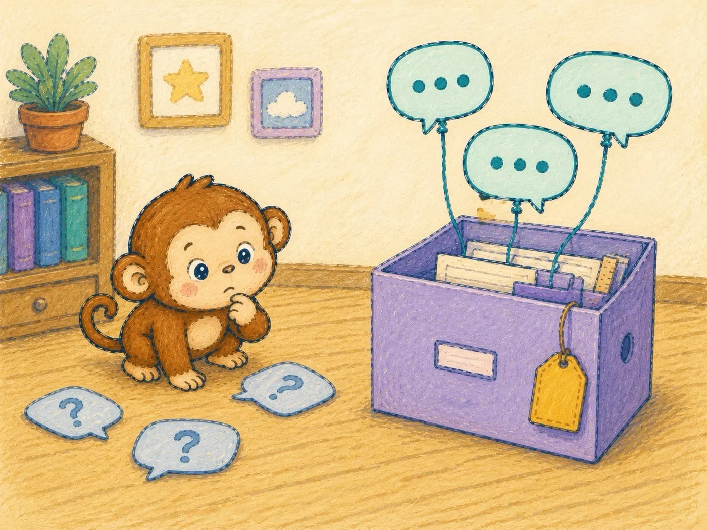
4.4 個人工作流範例一：寫作流程
以一篇文章為例，AI 在每一步的角色不同：
素材收集：用語音功能把零散想法先講出來
大綱：把素材丟給 AI，請它提出三種大綱，你挑一種改
草稿：一次寫一段，不要一次要一整篇，品質差很多
修稿：貼你自己的範文定風格，然後逐段修
原則是：AI 負責產生選項與初稿，你負責判斷與定稿。順序反過來（AI 定稿、你產草稿）的人，寫出來的東西都長一個樣。
4.5 個人工作流範例二：資料整理流程
會議與訪談的標準流程：
錄音，用轉錄工具或 AI 的語音功能變成逐字稿
逐字稿丟進對應的 Project，請 AI 摘要成三部分：結論、待辦、爭議點
待辦直接請它整理成表格，標上負責人與期限
原本一小時的會後整理，壓到十分鐘以內。這是多數上班族學 AI 之後第一個回本的地方。
4.6 隱私與資料安全
別人的個資不要貼。客戶名單、員工資料、任何可以識別特定人的資訊。
公司機密不要貼。合約金額、未公開的財務數字、內部文件，除非公司明確允許。
你自己的敏感資訊謹慎貼。身分證字號、帳號密碼，永遠不要。
另外，各家設定裡都有「是否允許用我的對話訓練模型」的選項，在意的話關掉。付費版與企業版通常預設不拿你的資料訓練，這也是付費的隱形價值之一。
⏱ 10 分鐘實作
為你手上一件會持續超過兩週的事建立 Project。上傳三份相關檔案，寫一段專案指令（這個專案在做什麼、你希望 AI 怎麼幫你），然後問它一個你這週正在煩惱的問題。
第五章7 / 12
從聊天到代理，AI Agent 入門
5.1 什麼是 Agent：從「回答你」到「替你做」
前四章的 AI 都在做同一件事：回答你。你問，它答，動手的還是你。
Agent 不一樣。它拿到任務後會自己拆解步驟、自己使用工具、自己執行到完成。差別用一句話講：聊天機器人給你食譜，Agent 直接把菜做出來。
判斷一個 AI 是不是 Agent，看三件事：會不會自己拆任務、會不會自己用工具、會不會多步驟連續執行。三個都會，就是 Agent。
5.2 Agent 光譜：其實你已經用過了
Agent 不是一道要重新學的高牆，是一條光譜：
半自動：單一任務，做完交報告
操作型：能操作你的瀏覽器或電腦，替你點擊、輸入
通用型：像第一章提過的 Manus，交辦一整件事，它自己想辦法
你已經站在光譜上了，接下來只是往右走。
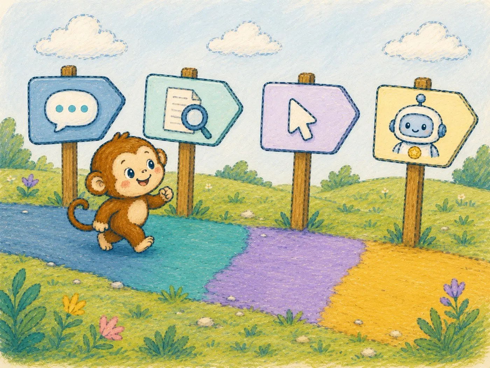
5.3 瀏覽器與電腦操作型 AI
這類 Agent 直接操作你的瀏覽器：開網頁、點按鈕、填表單，你在旁邊看著游標自己動。
適合的任務：跨網站比價、批次查資料、填寫重複性的表單。
好消息是，這個能力不用另外買工具。本章稍後會教你安裝的 Claude Code 與 Codex，兩者都有現成的瀏覽器套件（透過一種叫 MCP 的擴充標準接上瀏覽器），安裝很簡單：
Claude：裝官方的「Claude in Chrome」擴充功能（https://claude.ai/chrome ），到 Chrome 擴充商店點一下加入、登入帳號就好。搭配 Claude Code 使用的設定見官方說明（https://code.claude.com/docs/en/chrome ）
Codex：裝 Chrome DevTools MCP（https://github.com/ChromeDevTools/chrome-devtools-mcp ），把下面這行整段複製、貼進終端機，按 Enter 就完成：
codex mcp add chrome-devtools -- npx chrome-devtools-mcp@latest這個套件需要電腦裝有 Node.js，還沒裝的話 5.6 節的小知識與影片有教
裝好之後，直接用說的交代它：「打開這三個購物網站，幫我比這台吸塵器的價格。」
目前的限制也要老實說：速度比人操作慢、遇到複雜網頁會卡住、需要你在旁邊確認關鍵步驟。現階段把它當「可以幫你跑腿的實習生」，別當全自動管家，預期正確，體驗才會好。
裝好瀏覽器插件後，一般用戶可以讓 AI 在網頁裡幫你做這些事：
打開幾個商品頁，整理價格、規格、評價與運費。
閱讀一篇很長的文章、報告或說明頁，整理重點和待辦。
跨網站查資料，例如把三個官方頁面的資訊整理成比較表。
填重複性的表單，例如活動報名、資料登錄、後台欄位整理。
檢查網頁內容，例如找出錯字、壞連結、按鈕不能按或版面跑掉的地方。
操作簡單後台，例如下載報表、匯出資料、複製結果到文件裡。
檢查 Threads 追蹤者，找出零粉絲、沒頭像、名稱可疑的帳號，確認後移除或封鎖。
這類插件的價值是讓 AI 不只回答你，而是能看見網頁、點擊網頁，替你處理那些很煩但規則很明確的瀏覽器工作。
5.4 Claude Code 初體驗：終端機沒有你想的可怕
接下來是全書最大的心理門檻：終端機，就是那個工程師電影裡的黑視窗。
先破除迷思。終端機只是「用打字代替點滑鼠」的操作方式，你打一句話，電腦做一件事，僅此而已。它不會弄壞你的電腦，你也不需要會寫程式。
Claude Code 就住在這個黑視窗裡。不過好消息是，它現在也有自己的桌面 App，所以安裝有兩種方式，挑一種就好。
Claude Code 需要 Claude 的付費方案（Pro 以上），免費帳號目前用不了。可以先把本章讀完再決定要不要訂。
方式一：桌面 App（新手推薦）
前往 https://claude.ai/code ，下載你電腦對應的版本（Mac 與 Windows 都有）
打開下載的安裝檔，像安裝任何軟體一樣裝完
打開 App，依畫面指示用你的 Claude 帳號登入，完成
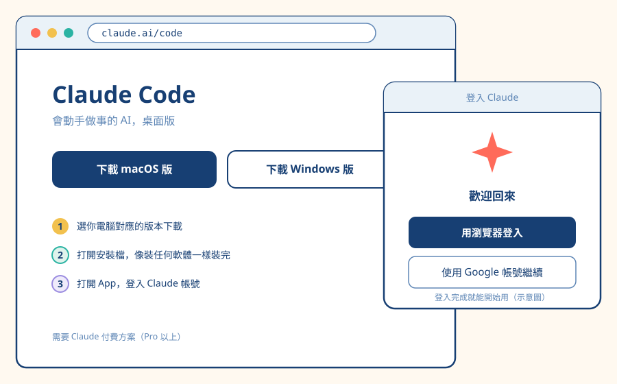
App 把終端機包進了友善的視窗介面，還不想碰黑視窗的人，從這裡開始最順。
方式二：裝在自己電腦的終端機
不需要事先安裝任何東西，一行指令會自己搞定一切。
Mac 的步驟：
打開「終端機」：按 Command 加空白鍵叫出 Spotlight，輸入「終端機」，按 Enter
把下面這行整段複製、貼進黑視窗，按 Enter，等它跑完：
curl -fsSL https://claude.ai/install.sh | bash關掉終端機，重新開一次，輸入
claude，按 Enter它會打開瀏覽器要你登入 Claude 帳號，登入完就能開始用
Windows 的步驟：
打開「PowerShell」：按開始鍵，直接輸入 PowerShell，按 Enter（藍底的視窗就是它）
把下面這行整段複製、貼進去，按 Enter，等它跑完：
irm https://claude.ai/install.ps1 | iex關掉 PowerShell，重新開一次，輸入
claude，按 Enter依畫面指示用瀏覽器登入 Claude 帳號，完成
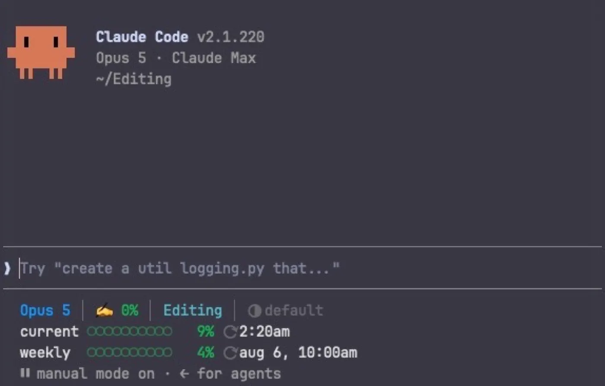
想確認有沒有裝好，在終端機輸入 claude --version，有跳出版本號就是成功。之後它會自動在背景更新，你不用管版本問題。
兩種方式的能力一樣，差別只在外皮。想順便克服終端機恐懼的，直接選方式二，本章接下來的內容兩邊都適用。
看影片跟著做
如果光看文字還是卡住，或是想有人在旁邊示範一次，我錄了幾支影片，跟著操作就好：
Claude Code / Codex 安裝教學：https://youtu.be/iAbCXP2bNsQ
Mac 安裝套件管理器 HomeBrew，並用 HomeBrew 安裝 Python：https://youtu.be/yZ3-wt4Wpk0
Mac 與 Windows 用 .pkg 方式安裝 Node.js：https://youtu.be/qyaU3wtnKzE
第一支對應本節與 5.6 節的安裝步驟，照著做就能裝好。後面兩支是進階備案，一行式指令通常已經幫你處理好環境，只有在安裝過程報錯，或你之後想再裝別的 CLI 工具時才需要它們。現在看不懂沒關係，先跳過，需要時再回來。
裝好之後，你面對的其實還是那個熟悉的對話框，只是它現在有手了。
5.5 不寫程式的人怎麼用 Claude Code
Claude Code 的本名雖然帶著 Code，但它真正的能力是「在你的電腦上動手」。不寫程式的人照樣用得兇：
整理凌亂的資料夾：「把下載資料夾裡的檔案依類型分資料夾放好。」
批次改檔名：「把這 200 張照片依拍攝日期重新命名。」
彙整檔案：「把這個資料夾裡 12 份週報整理成一份季度總結。」
這些事的共通點：規則明確、量大、手動做很煩。以前你要嘛忍耐要嘛拜託工程師朋友，現在打一句話。
5.6 另一個選擇：Codex 安裝範例
OpenAI 也有一款同類型的工具，叫 Codex，一樣住在終端機裡，操作邏輯跟 Claude Code 大同小異。如果你平常的主力是 ChatGPT，從 Codex 開始會更順手（需要 ChatGPT 的付費方案，Plus 以上）。
它也有官方的一行式安裝指令，同樣不需要事先裝任何東西。
Mac 的步驟：
打開「終端機」（方法同 5.4：Spotlight 搜尋「終端機」）
把下面這行整段複製、貼進去，按 Enter，等它跑完：
curl -fsSL https://chatgpt.com/codex/install.sh | sh關掉終端機，重新開一次，輸入
codex，按 Enter畫面會問你怎麼登入，選「Sign in with ChatGPT」，它會打開瀏覽器讓你登入 ChatGPT 帳號，完成
Windows 的步驟：
打開「PowerShell」（方法同 5.4：開始鍵搜尋 PowerShell）
把下面這行整段複製、貼進去，按 Enter，等它跑完：
irm https://chatgpt.com/codex/install.ps1 | iex關掉 PowerShell，重新開一次，輸入
codex，按 Enter選「Sign in with ChatGPT」，用瀏覽器登入 ChatGPT 帳號，完成
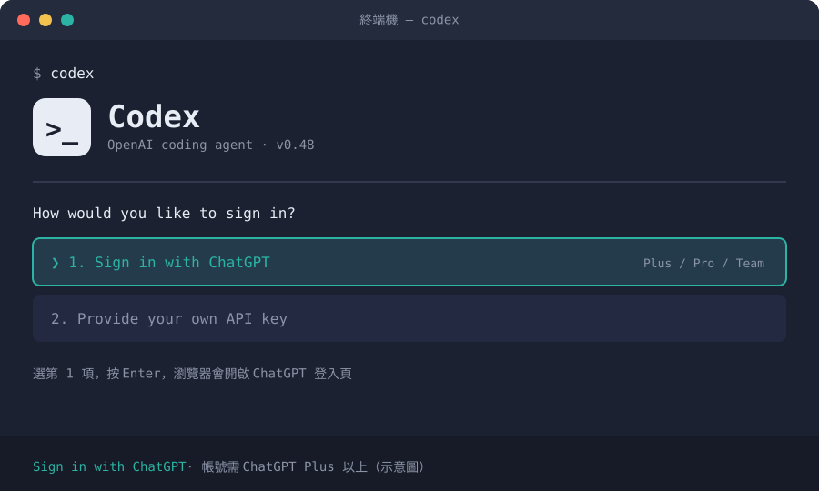
小知識：如果你的電腦本來就裝了 Node.js，也可以改用 npm install -g @openai/codex 這行安裝，結果一樣。不知道 Node.js 是什麼的人，直接用上面的官方指令就好，不用理會這段。真的想裝 Node.js，5.4 節列的第三支影片（https://youtu.be/qyaU3wtnKzE ）有完整示範。
安裝過程如果卡住，回頭看 5.4 節的影片清單，第一支就是 Claude Code 與 Codex 的實際操作示範。
啟動之後，畫面一樣是熟悉的對話框。該選 Claude Code 還是 Codex，回頭看 1.6 節那個老問題就好：你平常主力用哪一家，就從那一家開始。
5.7 交辦任務的藝術
跟 Agent 說話，跟第二章的提示詞有一個關鍵差別：交代目標與驗收標準，不要交代步驟。
比較這兩種說法：
- ✗ 交代步驟
「先打開資料夾，然後把每個檔案打開看內容，然後⋯⋯」
- ✓ 交代目標
「把這個資料夾整理到我能在 10 秒內找到任何一份文件。同類的放一起，檔名要看得出內容。」
第二種的結果多半更好。Agent 的價值就是自己想步驟，你把步驟都規定死，反而綁住它。你要當的是出考題的人，不是寫解答的人。
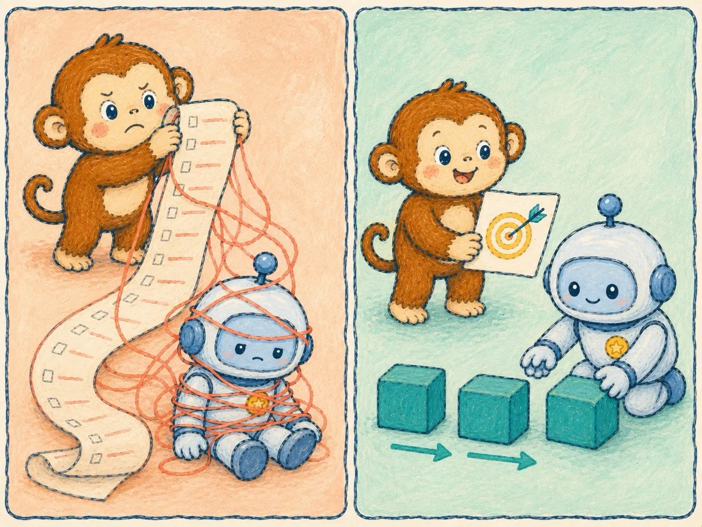
5.8 安全與確認機制
Agent 動手做事，就有做錯事的可能。所以它在關鍵動作前會停下來問你：要刪這個檔案嗎？要送出這個表單嗎？
三個原則：
確認訊息要讀，不要變成無腦按「好」。
刪除、送出、付款這三類動作，自己盯著。
重要資料先備份，再讓 Agent 進場。
Agent 像一位很能幹但剛到職的助理，能力沒問題，信任要慢慢給。
⏱ 10 分鐘實作
打開 Claude Code，讓它整理你的下載資料夾。先用 5.7 的方式交代目標，看它列出的計畫，確認後放行。做完去資料夾看成果，你對「AI 能替你做事」的理解會從此不同。
第六章8 / 12
Skills，把你的專業教給 AI
6.1 Skills 是什麼：可重複使用的 AI 標準作業流程
回想第二章結尾你開始累積的提示詞筆記。每次要用，你得翻出來、複製、貼上，還要重新交代一次背景。
Skill 把這整包固定下來。它是一份寫好的作業流程說明書，教 AI 在什麼時機、用什麼規則、做什麼事。裝好之後不用每次召喚，AI 遇到對的場景會自己拿出來用。
白話來講：提示詞是你每次口頭交代，Skill 是你寫好貼在牆上的 SOP，新來的助理自己會看。
6.2 一張表分清楚：這些名詞到底差在哪
| 工具 | 解決什麼 | 什麼時候用 |
|---|---|---|
| 提示詞 | 單次把話說清楚 | 每一次對話 |
| 自訂指令 | 全域的個人偏好 | 一次設定，處處生效 |
| Projects | 單一專案的資料與背景 | 持續兩週以上的事 |
| GPTs | 打包成給別人用的機器人 | 想分享給他人時 |
| Skills | 可重複的工作流程 SOP | 同一種任務會反覆做時 |
記法：前面四個給 AI 資訊與背景，Skills 給 AI 你的做事方法。
6.3 解剖一個 Skill
一個 Skill 的本體，是一個資料夾加一份說明文件（SKILL.md）。說明文件裡就三個部分：
我是誰：這個 Skill 叫什麼、做什麼用。
什麼時候召喚我：觸發時機，寫得越具體，AI 判斷得越準。
規則：執行這個任務時要遵守的所有要求，格式、步驟、禁止事項。
沒有程式碼，全部都是白話文。會寫工作交接文件的人，就會寫 Skill。
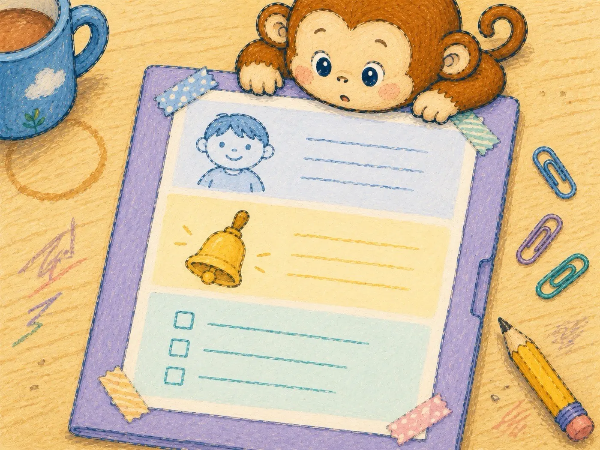
6.4 手把手自建第一個 Skill：你的文案風格
把第二章的提示詞筆記升級成 Skill。以下是一份完整範例，照著改成你的版本：
# SKILL: 我的社群文案風格
## 什麼時候用
當我要求「寫貼文」「寫文案」「幫我發文」時使用。
## 我的基本設定
- 平台：Threads 與 Facebook
- 讀者：25 到 35 歲、對副業有興趣的上班族
- 目標：讓讀者覺得「這說的就是我」，願意追蹤
## 寫作規則
1. 開頭第一句一定是具體場景，不是道理
2. 段落短，一段不超過 3 行
3. 用台灣口語，禁止「通過、信息、視頻」等用語
4. 每篇最多一個重點，貪多就拆成兩篇
5. 結尾拋一個問題給讀者，不下結論
## 禁止事項
- 不用驚嘆號超過 1 個
- 不寫「你是否也曾⋯⋯」這種模板開頭
- 不加與內容無關的 hashtag不用管檔案要存成什麼、放去哪。把上面這段文字直接貼給你的 AI，說一句：「幫我把這份規則存成 Skill。」它會自己建檔、放進正確的位置。下次你說「寫貼文」，它就自動照這套規矩來。
要安裝任何別人做好的 Skill 也是一樣的邏輯。當你從 GitHub 或其他地方下載了別人的 .md 檔案或整個資料夾，把檔案或資料夾直接拖進終端機，對 AI 說「幫我安裝」，它就會處理好，以後你就能使用這個 Skill 了。
6.5 偷吃步：讓 AI 幫你寫 Skill
Skill 本身也可以請 AI 代筆。這樣說：
「我想建立一個 Skill。以下是我做這件事的習慣與要求：（把你的做法、範例、禁忌講一遍，講亂沒關係）。幫我整理成一份 Skill 並存好，內容要包含觸發時機與規則。」
它生出初稿，你修掉不像你的部分。比從零開始寫快得多。
6.6 Skill 的迭代：用了不順就回來改
Skill 不是寫完就結束的東西，它是活的。
每次輸出不滿意，別只在對話裡修完就算了。回頭想：這次的修改是不是一條可以寫進 Skill 的規則？是的話，加進去。
三個月後回頭看，你的 Skill 會累積十幾條規則，每一條都來自一次真實的不滿意。到那時候，AI 的產出會越來越像你親手做的，因為它拿到的說明書，是你一次一次修出來的。
更複雜的 Skill，不用一開始就想完整。先問 AI：「這件事要怎麼完成？」讓它幫你拆流程，再一步一步做成 Skill。
你可以直接問：
「我要做一個 Skill，可以把會議錄音轉成逐字稿，整理成固定格式的摘要，最後寄給指定與會者。這件事要怎麼完成？」
接下來照這個順序做：
先讓 AI 拆出步驟。
一次只完成其中一小段。
用順之後，再把流程寫進 Skill。
以後接觸 Vibe Coding，這些跑順的 Skill 還可以變成在伺服器上運行的服務，讓別人也能使用。很多商機就是從「我把自己的麻煩事做成工具」開始的。
⏱ 10 分鐘實作
用 6.4 的範例當模板，建立你的第一個 Skill，主題挑你最常請 AI 做的那件事。建好之後實際觸發一次，看它是不是照你的規矩來。不滿意的地方，改進 Skill 裡。恭喜，你已經在做設計者的事了。
第七章9 / 12
社群經營的工具地圖
7.1 裝備心法：工具夠用就好，內容才是本體
AI 最實用的地方之一就是把一個人的內容產能放大。它可以幫你想題目、整理資料、改稿、生成腳本、做初步設計。但錄音、剪輯、排版、發布、收信、整理素材，還是需要一些工具來完成。
好消息是，現在很多免費工具已經夠好用，不需要一開始就花一堆錢。
不用全部安裝，每個類別挑你覺得順手的用，有需要再考慮付費。新興的 AI 工具免費試用額度很少，不過也足夠你做一些非常小型的樣品。
7.2 影片剪輯與錄製
CapCut 剪映（https://www.capcut.com）：新手的第一款剪輯軟體。自動字幕、模板、去背、配樂都內建，手機和電腦都能用。短影音時代的瑞士刀。
DaVinci Resolve（https://www.blackmagicdesign.com/products/davinciresolve）：想認真學剪輯再來。好萊塢等級的調色與剪輯，免費版的功能多數人一輩子用不完。
OBS Studio（https://obsproject.com）：錄螢幕、錄教學、開直播，免費開源。做知識型內容的人遲早用得到。
Loom（https://www.loom.com）：快速錄一段帶人臉的螢幕說明，錄完自動生成連結，丟給客戶或學員最方便（免費額度）。
AI 新工具：
Kling（https://klingai.com）：文字或圖片生成影片，適合做短影音 B-roll、概念畫面、產品情境。
Seedance（https://seed.bytedance.com/en/seedance）：動態穩定、電影感強，適合把一張圖延伸成短片段。
Runway（https://runwayml.com）：AI 影片生成與編輯平台，適合修現有影片、換背景、移除物件、延長短片。
7.3 聲音與 Podcast
Audacity（https://www.audacityteam.org）：老牌免費錄音與剪輯軟體，降噪、剪接、匯出，Podcast 起步夠用了。
Adobe Podcast Enhance（https://podcast.adobe.com/enhance）：網頁版免費神器，把手機錄的模糊人聲一鍵洗成接近錄音室的音質。錄音環境不好的人，先試這個再考慮買麥克風。
MacWhisper（https://goodsnooze.gumroad.com/l/macwhisper）：AI 逐字稿工具，訪談、口述、會議錄音丟進去，幾分鐘變文字。背後的 Whisper 模型（https://github.com/openai/whisper）是開源的，其他平台也有大量替代品。
AI 新工具：
ElevenLabs（https://elevenlabs.io）：文字轉語音和配音工具，適合做旁白、短影音配音、語音版本內容。
Suno（https://suno.com）：AI 音樂生成，適合做片頭、過場、社群短影音的背景音樂草稿。商用前要看方案授權。
Descript（https://www.descript.com）：用改文字的方式剪音訊和影片，適合 Podcast、訪談、口播內容。
7.4 圖像設計與素材
Canva（https://www.canva.com）：縮圖、貼文圖、簡報、履歷的萬用解，模板多到選擇困難，免費版夠用很久。
Photopea（https://www.photopea.com）：網頁版的免費 Photoshop，不用安裝、不用訂閱，偶爾要修圖去背的人首選。
remove.bg（https://www.remove.bg）：一鍵去背，做縮圖人像的固定班底。
Unsplash（https://unsplash.com）與 Pexels（https://www.pexels.com）：免費可商用圖庫，貼文與簡報配圖不用再擔心版權。
Flaticon（https://www.flaticon.com）：圖示素材庫，簡報與資訊圖表的好朋友（免費版需標注來源）。
Google Fonts（https://fonts.google.com）：免費可商用字型，中文找思源黑體與思源宋體。字型侵權的賠償金額會讓你難忘，用免費授權的最安心。
AI 新工具：
ChatGPT 生圖（https://chatgpt.com）：適合做宣傳圖、插圖、概念視覺，和文案一起迭代最方便。
Ideogram（https://ideogram.ai）：特別適合有文字的圖片，例如海報、標準字、封面、活動主視覺。
Midjourney（https://www.midjourney.com）：風格化能力強，適合做高質感情境圖、封面視覺、品牌氛圍圖。
7.5 筆記與知識管理
Obsidian（https://obsidian.md）：本地筆記庫，你的第二大腦。所有筆記都是你電腦裡的純文字檔，這個特性讓它成為 AI 時代最好接工具的筆記軟體，第五章的 Claude Code 可以直接讀寫它。個人使用免費。
Notion（https://www.notion.com）：資料庫型筆記，內容排程表、選題庫、合作案追蹤都好用，免費版夠個人用。
Google Keep（https://keep.google.com）：靈感捕捉網。走路想到一句話，手機語音輸入丟進去，回家再整理進正式筆記庫。
AI 新工具：
NotebookLM（https://notebooklm.google.com）：把 PDF、網站、YouTube、Google 文件丟進去，讓 AI 根據你的資料回答、整理摘要、生成學習材料。
Readwise Reader（https://readwise.io/read）：適合收文章、PDF、電子報，邊讀邊劃線，再把重點帶回筆記庫。
Napkin（https://www.napkin.ai）：把文字整理成圖解，適合把文章觀點轉成簡報圖或社群圖卡草稿。
7.6 發布、排程與名片頁
Meta Business Suite（https://business.facebook.com）：Facebook 與 Instagram 的官方免費排程工具，能排程就不要手動發文。
Buffer（https://buffer.com）：跨平台排程，免費額度可以接三個社群帳號。
Portaly（https://portaly.cc）或 Linktree（https://linktr.ee）：個人連結名片頁，把你所有平台、作品、報名連結收在一頁，放進社群的個人簡介。
Substack（https://substack.com）或 MailerLite（https://www.mailerlite.com）：電子報起步的免費選擇。名單是你唯一不受演算法擺布的資產，越早開始累積越好。
AI 新工具：
OpusClip（https://www.opus.pro）：把長影片自動切成短影音，適合直播、訪談、Podcast 再利用。
Metricool（https://metricool.com）：排程與數據工具，適合想同時看多平台成效的人。
Beehiiv（https://www.beehiiv.com）：電子報平台，適合想把內容、名單和成長工具放在一起的人。
7.7 營運雜貨鋪
Google 表單（https://forms.google.com）與試算表：報名表、問卷、內容日曆、合作報價紀錄，免費而且和 AI 整合容易。
Google Drive（https://drive.google.com）：素材與成品的雲端倉庫，跟廠商與剪輯師交檔案的預設地。
Bitly（https://bitly.com）：短網址與點擊追蹤，想知道貼文裡的連結到底有沒有人點，就靠它（免費額度）。
AI 新工具：
Zapier（https://zapier.com）：把表單、Email、試算表、通知串起來。新的 AI 功能可以用白話幫你建立自動化。
Make（https://www.make.com）：視覺化自動化工具，適合把報名、寄信、表格、通知串成流程。
Airtable（https://www.airtable.com）：比試算表更像資料庫，適合管理選題、合作案、學員名單和內容排程。
7.8 工具再多，缺的是接起來的那條線
看完這張地圖，你可能發現一件事：工具都免費，貴的是你的時間。
剪輯在 CapCut、字幕重新跑一次、封面去 Canva 做、發布再手動搬運，每個環節都要開一個軟體、轉一次檔、貼一次上傳。
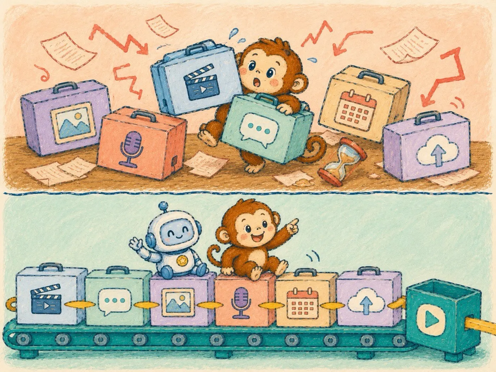
多數自媒體經營者不是輸在內容，是耗損在搬運。這個問題怎麼解決呢？嘿，這就是我的系統價值所在，你感興趣的話，要看到結語。
7.9 結語：這條路的終點，是自由
回頭看這四層樓。
第一、二章，你學會跟 AI 把話說清楚。第三、四章，你讓 AI 進入你的日常工作。第五章，你給了 AI 手腳。第六章，你把自己的做事方法寫成了它看得懂的 SOP。第七章，你補齊了自媒體經營的整套裝備。
注意最後這一步的身分變化：前面你是 AI 的使用者，現在你是 AI 的設計者。工具人人都有，但把自己的專業與品味教給 AI 的人，目前還是少數。
最後，想說回序章那個故事。
在谷底的那幾年，我最想要的其實不是錢，是選擇權。病好之後回頭看，我用 AI 重建的也不只是事業。是每天睡到自然醒的權利，是不用看任何人臉色的底氣，是可以選擇和誰相處、接什麼工作的自由。還有那些生病時只能在螢幕上看的風景，我現在有錢也有時間親自去看了！
這些東西，我以前以為要非常有錢才買得到。其實遠遠不是那樣，它們只需要一套能自己運轉的小事業，是的，一個小事業。看完這本電子書，你應該就發現這件事也不是那麼難。
時代剛好給我們一份少見的紅利：一個人加上 AI，就能做到以前一整個團隊才能做的事。門檻低到連我這種歸零重來的病人都爬得回去，你沒有理由爬不上來。
不過讀到這裡，你可能還是想問：
就算已經知道 AI 可以替你做什麼了。可是你要拿這些能力去做什麼？
是把原本 8 小時的工作縮短成 4 小時，然後讓公司再塞更多工作給你？還是把省下來的時間與生產力，慢慢變成一份屬於自己的收入？
兩條路都沒有錯。只是如果你已經工作了幾年，手上累積了一些專業，偶爾也想過做副業、經營社群，甚至把自己的經驗整理成產品，我另外準備了一堂 30 分鐘的免費公開課。
為什麼我鼓勵你創業
錯過電商與網紅崛起，你還來得及！重新理解 AI 帶來的創業機會。
我會從一個小資上班族最熟悉的問題開始算：如果本金不多，除了努力存錢和投資，還有沒有更快累積資產的方法？AI 到底改變了哪些創業成本？一個普通人又能怎麼把自己的專業，慢慢變成內容、信任與收入？
如果你只想把 AI 用在工作上，讀完這本書其實已經很夠用了。可是，如果你心裡有點癢，隱約覺得自己能做的事情不只這些，那就接著看這堂課吧（如果你還沒看過的話，這堂課當初是和電子書一起搖手召喚你的～）
不用急著申請任何東西。先把課看完，再決定這條路跟你有沒有關係。也許我們很快會再見面！
傳送門10 / 12
冏冏的各社群
這本書的更新、我平常的 AI 實戰筆記與商業觀察，都發在社群上。想追蹤的話，這一頁全部都有：
歡迎來逛逛。看到你留言說「我是從電子書來的」，我會特別開心。
附錄 A11 / 12
工具比較速查表
| 項目 | ChatGPT | Claude | Gemini |
|---|---|---|---|
| 官網 | https://chatgpt.com | https://claude.ai | https://gemini.google.com |
| 目前主力模型 | GPT-5.5 | Claude 5 系列 | Gemini 3.1 Pro |
| 招牌強項 | 全能、語音、生圖、生態系 | 長文寫作、推理、低幻覺率 | Google 服務整合 |
| 適合的人 | 不知道從何開始的人 | 文字工作者 | Google 重度使用者 |
| 免費版 | 有，次數限制 | 有，次數限制 | 有，次數限制 |
| 個人付費方案 | 約每月 20 美元起 | 約每月 20 美元起 | 約每月 20 美元起 |
價格與額度變動快，以各官網為準。
附錄 B12 / 12
術語表
LLM（大型語言模型）：聊天機器人背後的引擎，那位讀過全世界文字的接話高手。
Token：AI 計算文字量的單位，你可以粗略理解成字數。
幻覺：AI 一本正經講錯話的現象，重要事實務必自行查證。
多模態：除了文字，也能處理圖片、語音、影片的能力。
提示詞（Prompt）：你對 AI 說的話，品質決定答案品質。
上下文視窗：AI 在一個對話裡「記得住」的容量上限。
Agent（代理）：會自己拆任務、用工具、多步驟執行的 AI。
Skill：教 AI 做某類任務的標準作業流程文件。
🎉 你讀完了
接下來，把能力變成收入
你已經走完四層樓：把話說清楚、讓 AI 進入工作、給它手腳，再把自己的做事方法教給它。
如果你心裡有點癢，覺得自己能做的事情不只這些，我準備了一堂 30 分鐘的免費公開課 《為什麼我鼓勵你創業》，講的是怎麼把專業慢慢變成內容、信任與收入。
免費觀看 30 分鐘公開課 →